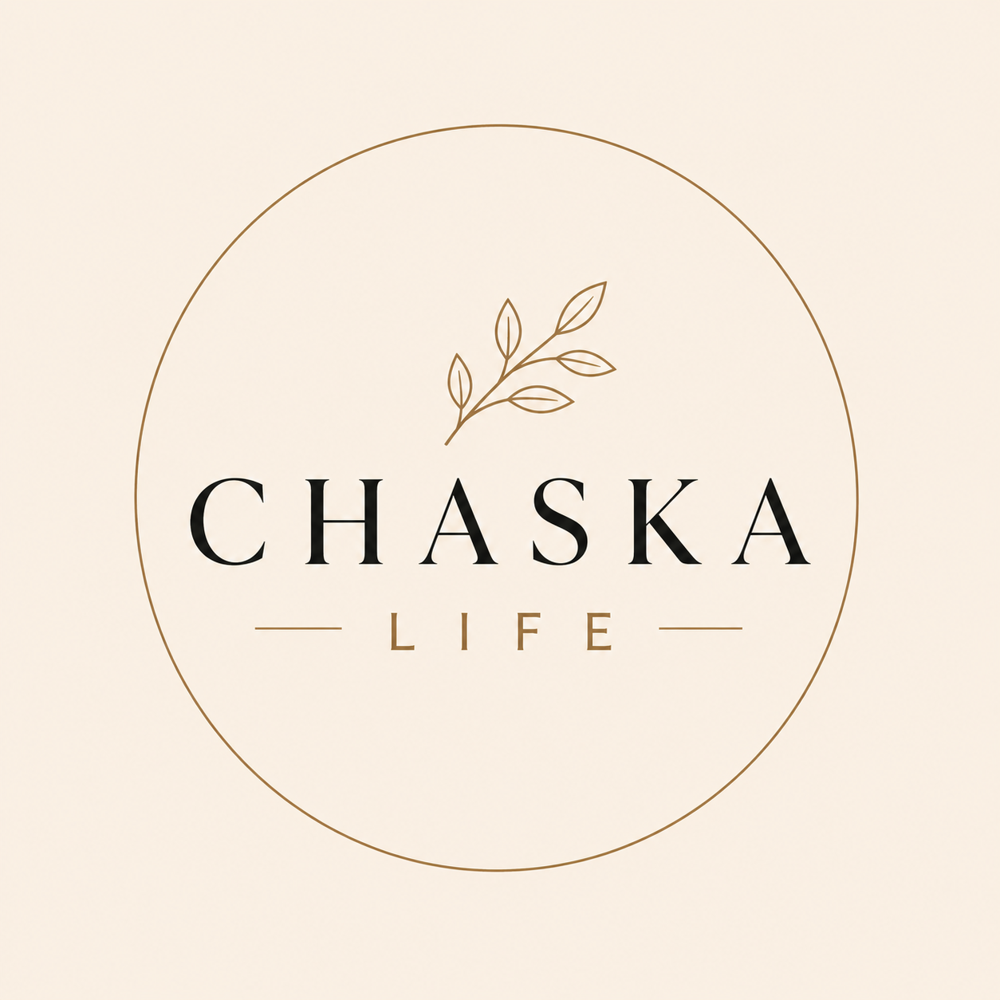
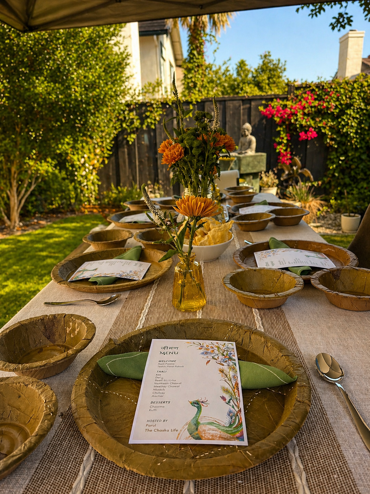
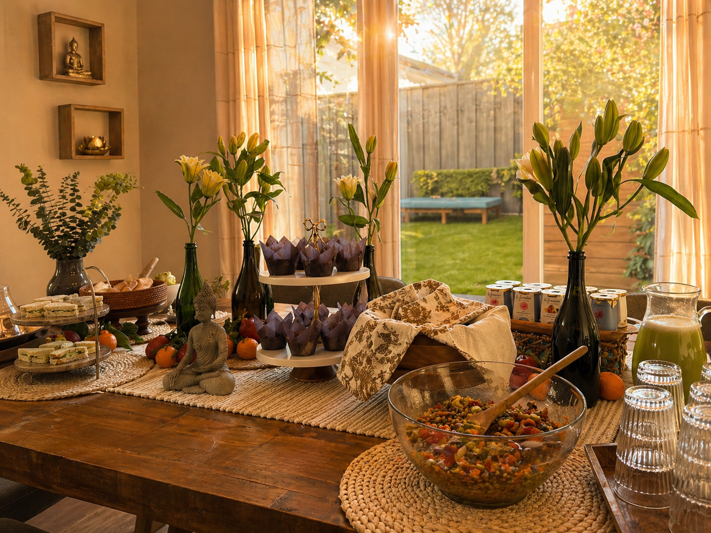
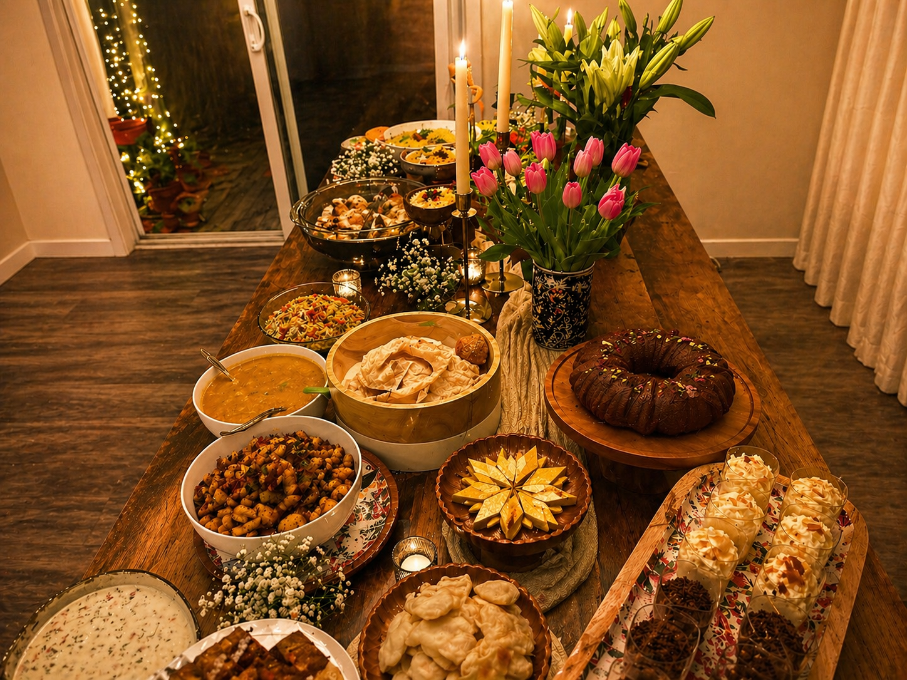

Field Notes
Design lives in the
Explore Field Notes
Design lives in the
details you notice
every day.
Tablescapes, terracotta pots, the way a garland falls. I collect moments of considered design — physical and digital — and notice what they share with the products I build.

The Chaska Life
An independent experience design practice
focused on human-centered gatherings.
focused on human-centered gatherings.



